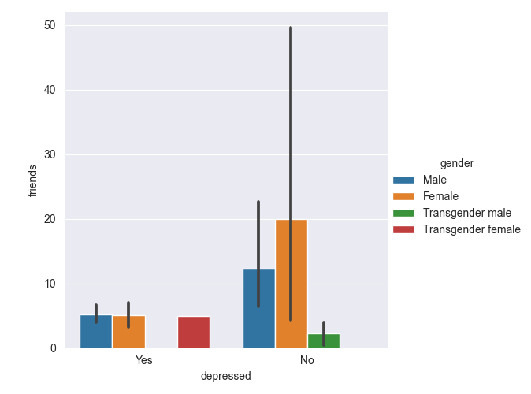

In this project, we will be focusing on Reddit and gender. With sentiment analysis and data visualizations, our findings will demonstrate the relationship between gender and emotional wellbeing.
r/ForeverAlone is a subreddit for Forever Alone Folks.
It has 166k members and was created on September 15, 2010. The 9 rules of this subreddit are:
1. Be polite, friendly and welcoming.
2. Do not tell anyone they are not forever alone enough to be here. Foreveralone has no firm definition.
3. No inflammatory comments.
4. No incel speak or references.
5. No linking to other subreddits or personal blogs.
6. No trolling.
7. No Creating Drama.
8. Do not post your dick.
9. No "rate me" threads.
Using The Demographic
/r/ForeverAlone Dataset available on Kaggle, we created data visualizations using the Seaborn Python library to highlight
the relationship between gender and number of friends, social fear, depression, etc. We also created word clouds on Voyant to highlight
the most popular responses to questions about help and self-improvement. In 2016, a survey was posted to the r/ForeverAlone subreddit, asking
questions such as "What is your Gender?", "How many friends do you have IRL?", "Do you have social anxiety/phobia?", and
"Are you depressed?". The survey got 469 responses from redditors active on the r/ForeverAlone subreddit; this data is our
dataset for this section.
This subreddit is very male-heavy, with 84% of respondents identifying as male and 16% identifying as female. According to
Pew Research's 2016 poll, over two-thirds of Reddit users in the
United States skewed male. So, the gender breakdown of this survey are in line with Reddit gender demographics.
The following data visualization plots depressed (yes or no) on the x axis and number of real life friends on the y axis, with breakdowns
by respondent gender. Redditors on r/ForeverAlone who are depressed on average have a smaller number of real life friends (~5) and this
is the same for males and females. Meanwhile, redditors on r/ForeverAlone who said they are not depressed have more real life friends
than the redditors in this subreddit who are depressed. It is interesting to note females who are not depressed have more real life friends
(~20) than males who are not depressed (~13). This could suggest that depression is linked to feeling lonely and unsupported by real life
friends.

Similar to the previous data visualization, this one plots social fear (yes or no) on the x axis and number of real life friends on the y axis,
with breakdowns by respondent gender. Redditors on r/ForeverAlone who have social fear (i.e. social anxiety/phobia) on average have less friends
(~3-4). The breakdown is the same for females and males. Meanwhile, redditors on r/ForeverAlone who said they do not have social fear have more friends.
Among the gender breakdown for this answer, females without social fear (~25) have more real life friends than men without social fear (~13). So, there
is not a gendered difference in number of real life friends for members of this subreddit who have social fear, but there is a gendered difference in number of
real life friends for members of this subreddit who do not have social fear.
The question "What kind of help do you want from others?" was a select all type of question. For respondents who identify
as female (n=73), the most frequent words are help (42); want (41); date (29); set (17); coaching (12). However, looking at
the frequency of help alone is misleading because it is used within the phrase "I don't want help"; that is actually the most
popular answer to this question from females on this subreddit. Females on this subreddit also expressed desire getting help with dating.

For respondents who identify as male (n=393), the most frequent words are date (235); help (195); want (193); set (146);
wingman (115). The popularity of answers to this question is flipped for males, with their top want to get help with being dating
followed by "I don't want help."

The question "What have you done to try and improve yourself?" was another select all that apply question. For respondents
who identify as female, the most frequent words are clubs (62); gym (58); exercise (31); join (31); meet (31). So, females are
most likely to try to do social things such as joining clubs or physical activity such as going to the gym and exercising. This suggests
that self-improvement for females is rooted in social engagement and health.

For respondents who identify as male, the most frequent words are gym (320); clubs (218); exercise (164); joined (162);
join (109). This is similar to the results for females, but gym was overwhelmingly more popular than clubs. Gyms aren't necessarily
social places, while clubs are. So self-improvement for males could be more rooted in health and physical appearance.

The Sentiment Analaysis data collected comes from the Google Coarse-Discourse github page.
Using the raw data, we collected the text and subreddit headings from the joined JSON file and created plain text files with this information.
Next we used the nltk VADER package to run sentiment analysis on all of the collected subreddit threads in an attempt to determine if overall, reddit
is a supportive environment.

This visualization shows data from the 255 subreddit threads which had the most textual data. The data demonstrates that
reddit contains much higher levels of positive sentiment than negative. This may be surprising given the perception that
places like reddit, 4chan, and 8chan (popular anonymous forum websites) have become breeding grounds for certain hate groups.
However, we believe that the evidence here suggests that many more people use reddit as a site to seek support and help.
Even comparing this data to the subreddit r/ForeverAlone suggests that people are searching for solidarity and support.
When users come together to voice their complaints and pains, they find solace in the fact that others can hear them and relate
to them. We previously noted that some reddit posters in r/ForeverAlone would voice the fact that they don't want help,
but the fact that they are frequenting this subreddit suggests that it may in itself be a form of help. After all, being heard
is sometimes all a person wants, and an anonymous forum such as reddit provides a perfect environment for that.
Further Analysis:
These visualizations again demonstrate that subreddits generally display much more positive sentiment than negative. The
average compound sentiment across all captured subreddits is 0.65 which clearly leans more positive. Also, when running an
Analysis of the Top 3 subreddits by average compound, the returned list is relatively long due to the fact that many
subreddits tie each other for positive sentiment score. Interestingly, the subreddits span a very wide array of topics and
prove to be supportive of a diverse group of interests. The Bottom 3 subreddit analysis has fewer subreddits that tie for
the lowest scores, which supports the idea that generally there are more supportive than unsuportive subreddits on the site.